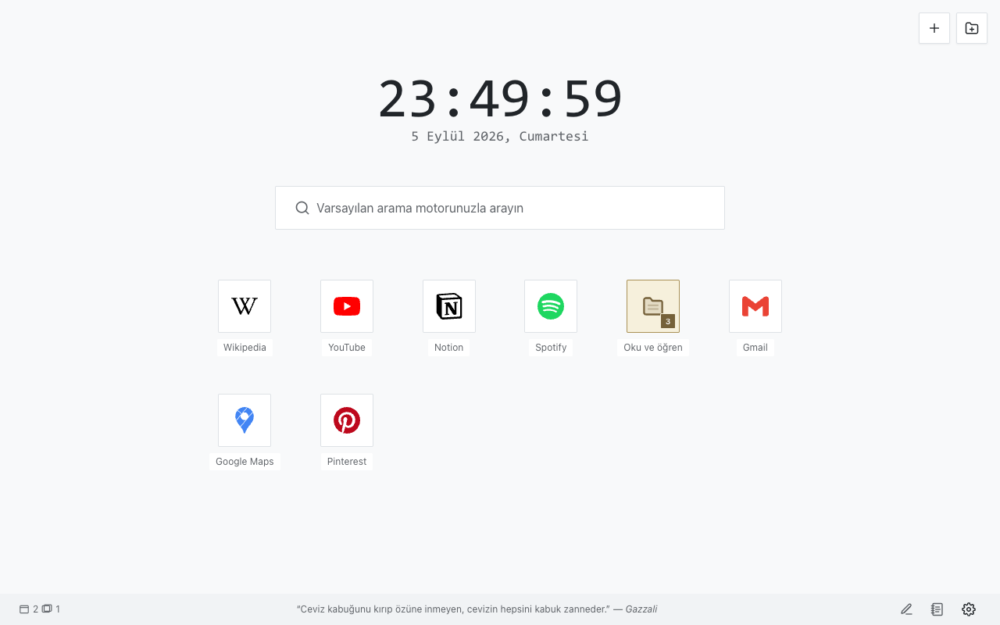
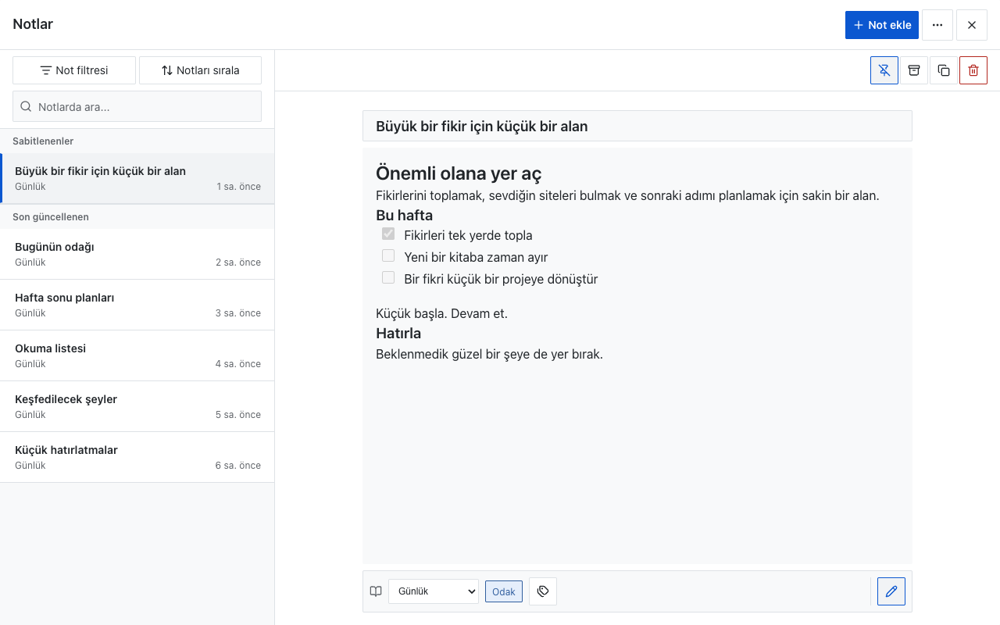
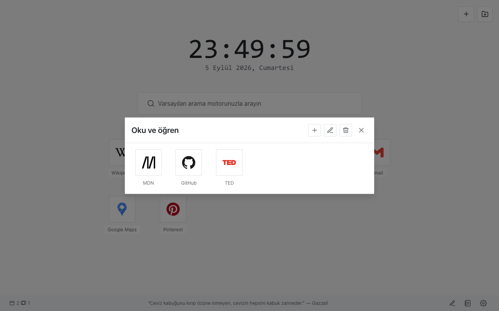
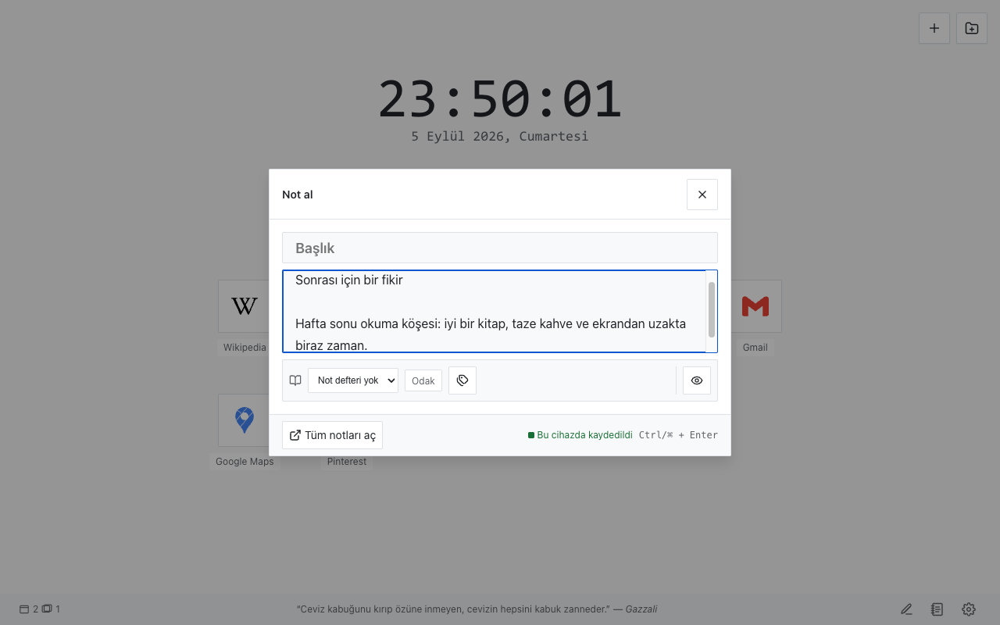
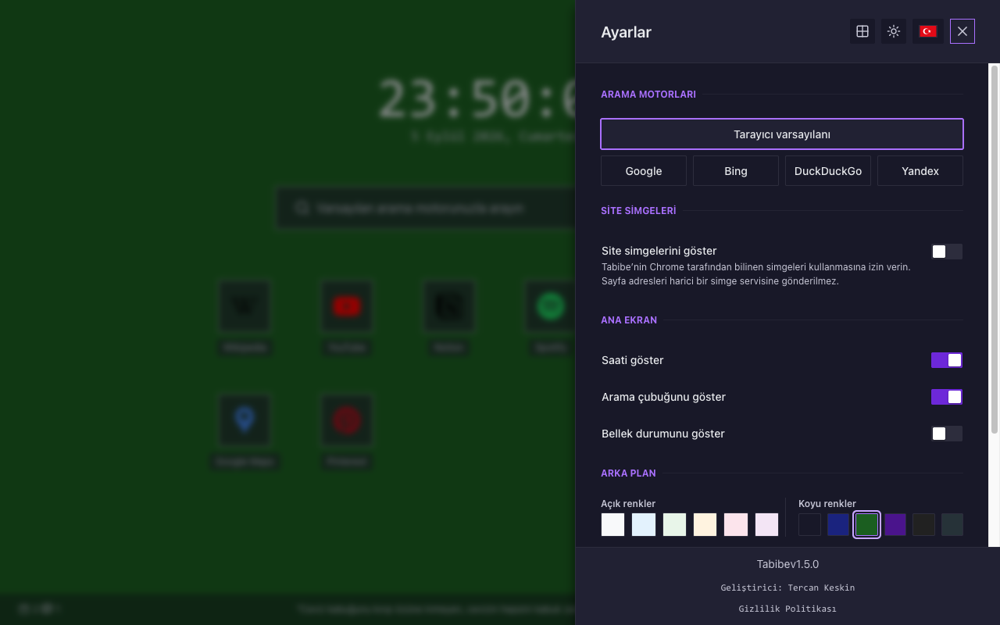

{kind=link}
{kind=link}
Siteleriniz, sizin düzeniniz
Kısayolları kaydedin, klasörlerde gruplayın ve sürükle-bırak ya da klavye eylemleriyle sıralayın. Paketli simgeleri veya isteğe bağlı Chrome site simgelerini kullanın.
Sürüm 1.5.0 · Açık kaynak
Sevdiğiniz siteler, günlük notlarınız ve sıradaki fikriniz; sakin, kişisel bir yeni sekme sayfasında bir arada.
GitHub üzerinden indirme · Chrome’a elle kurulur. Chrome Web Mağazası listelemesi henüz yoktur.

1.5.0 ile yeni
Aklınıza geleni bulunduğunuz yerden ayrılmadan kaydedin. Düzenlemeye hazır olduğunuzda not kütüphanenizi açın.

Yeni sekmeniz etrafında bir araya gelen günlük araçlar.
Kısayolları kaydedin, klasörlerde gruplayın ve sürükle-bırak ya da klavye eylemleriyle sıralayın. Paketli simgeleri veya isteğe bağlı Chrome site simgelerini kullanın.
Chrome’da seçili arama motoruyla başlayın. Dilerseniz Tabibe içinden açıkça başka bir sağlayıcı seçin.
Açık veya koyu tema, düz arka plan rengi ya da cihazınızdan bir görsel seçin. Saati ve arama kutusunu gösterin veya gizleyin.
Çalışma alanınızı JSON dosyasına aktarın ve yedeği geri yüklemeden önce önizleyin. Önemli notlarınızın ayrı bir kopyasını saklayın.
Hesap, analiz, reklam veya bulut eşitlemesi yok. Çalışma alanı verileri tarayıcı profilinizde saklanır ve geliştiriciye gönderilmez.
Ayarlar’dan dil değiştirin. Sağdan sola Arapça, klavye kontrolleri ve dar pencerelere uyumlu düzenler dahildir.
Bir ekran görüntüsünü tam boyutta görmek için açabilirsiniz.

Klasörler kısayol ızgarasını kolay taranır hâlde tutar.

Hızlı not alanı yeni sekmenizin hemen yanında kalır.

Görünüm, arama ve isteğe bağlı kontroller Ayarlar’da bulunur.
Arayüz ve paket içi gizlilik politikası 13 dilin tamamını destekler. Bu web sitesi İngilizce ve Türkçe sunulur.
GitHub sürümünü indirin ve birkaç adımda Chrome’a yükleyin. Tabibe’de hesap açmanız gerekmez.
Bu sürümdeki tabibe-v1.5.0.zip dosyasını indirin ve saklayabileceğiniz bir klasöre çıkartın.
Aşağıdaki adresi Chrome’un adres çubuğuna yapıştırın ve Geliştirici modu seçeneğini açın.
chrome://extensions
Paketlenmemiş öğe yükle seçeneğiyle içinde manifest.json bulunan klasörü seçin. Tabibe’yi kullanmak için yeni sekme açın.
Paketlenmemiş kurulumu güncelliyorsanız önce yedek alın, aynı eklenti klasöründeki dosyaları değiştirin ve chrome://extensions üzerinden Yeniden yükle düğmesine basın. Klasörün konumunu koruyun.
Hayır. İlk arama seçeneği Chrome Search API ile tarayıcınızın mevcut varsayılanını izler. Tabibe içinde açıkça başka sağlayıcı seçebilirsiniz. Sürümsüz eski Tabibe arama tercihleri bir kez tarayıcı varsayılanına taşınır.
Notlar, kısayollar, ayarlar ve arka plan görselleri yerel tarayıcı profilinde kalır. Tabibe bu depolamayı veya dışa aktarılan JSON dosyalarını şifrelemez. Hassas bilgiler saklamaktan kaçının; cihazınızı ve yedeklerinizi koruyun. Geliştirici yerel verilerinizi uzaktan kurtaramaz.
Tabibe’yi kaldırmak, yerel kurtarma kopyaları dahil eklenti verilerini kaldırır. Çalışma alanınızı korumak istiyorsanız önce yedek alın. Önceden dışa aktarılan dosyaları ve cihaz yedeklerini ayrıca yönetmeniz gerekir.
Yeni sekme sayfası, notlar, paketli simgeler ve gizlilik politikası çevrimdışı çalışır. Aramalar ve açtığınız siteler bağlantı gerektirir; hedef hizmetlerin politikaları geçerlidir.
{kind=link}
{kind=link}
{kind=link}